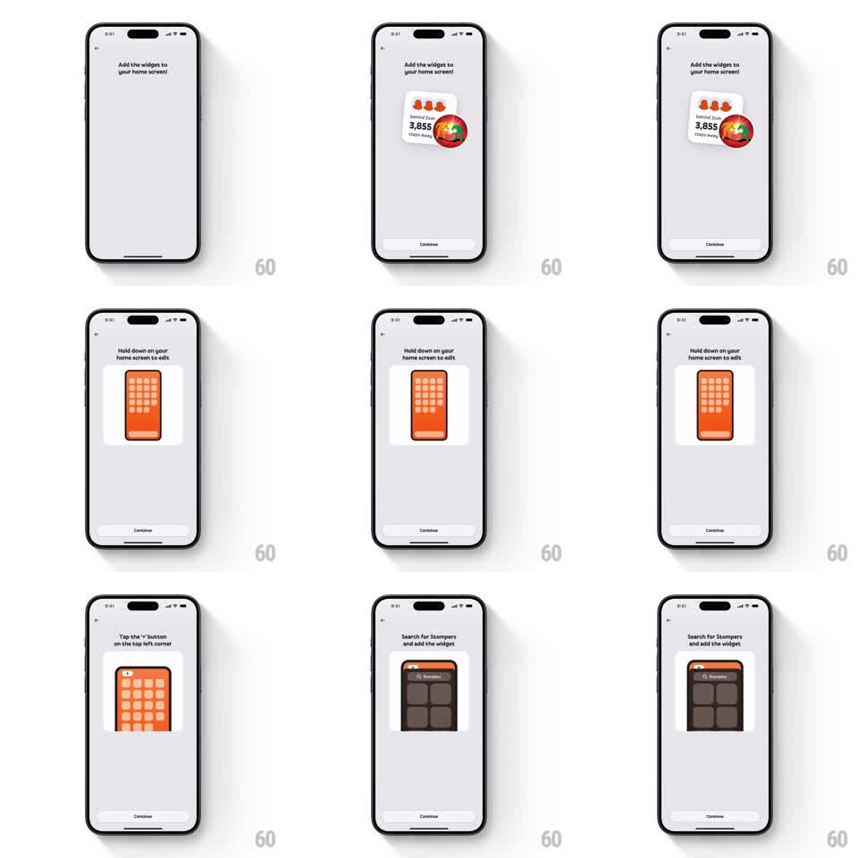

Media
Frame-by-frame

Rebuild this animation 1:1: Stompers' widget setup carousel - step-by-step pages where each instruction pairs with a looping animated illustration of the iOS gesture it describes.

Rebuild this animation 1:1: Stompers' widget setup carousel - step-by-step pages where each instruction pairs with a looping animated illustration of the iOS gesture it describes.
## Integration
Integration: stack-agnostic spec - springs given as stiffness/damping, timed motions as duration + curve; map every value to your framework and animation library of choice.
## Scene
Light onboarding flow: back chevron, an instruction title ("Add the widget to your home screen", "Hold down on your home screen to edit", ...), an animated illustration card, and a Continue button. Pages step sequentially.
## Motion spec
Pattern: instructional illustration loops with paged steps, ~2s per loop.
- Each page's illustration demonstrates its own gesture: a widget card wiggles in jiggle mode, a finger dot presses and holds on a home-screen mock (icons trembling +-2deg), a "+" corner button pulses, a search field types "Stompers" character by character.
- Gesture loops run continuously: press-hold ring fills over 800ms, holds 400ms, resets; typing advances one character per 120ms with a blinking caret.
- On Continue, the page slides left (300ms, ease-out) and the next page's illustration starts its loop on arrival.
- Illustrations sit in a soft white card; everything else stays static.
## Calibration
- Each loop must read at a glance - one clear gesture per page, no overlapping motions.
- The jiggle tremor is small and fast; big wobbles read as an error state.
## Reduced motion
Illustrations show a mid-gesture still; page transitions still slide.
## Don't miss
- The finger dot is the only moving element within a static UI mock - the mock itself never pans or zooms.
- The Continue button is always live; the loops are decoration, not gates.